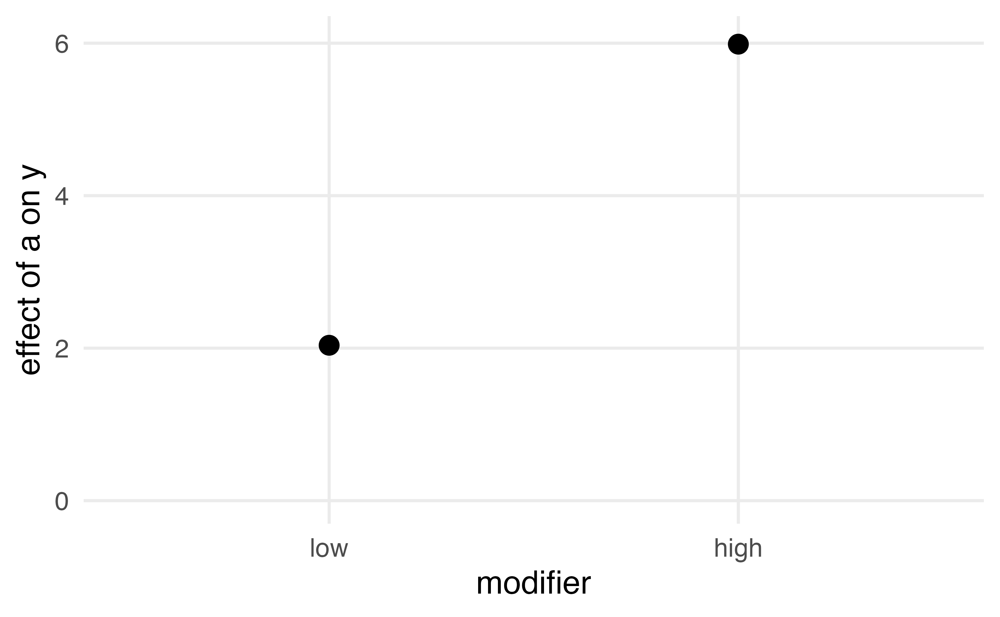
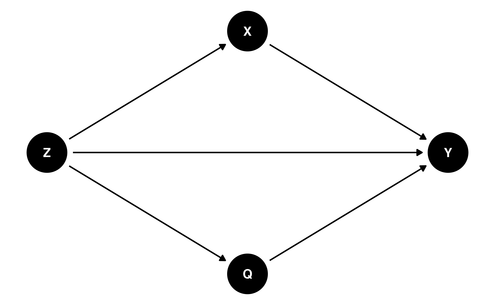
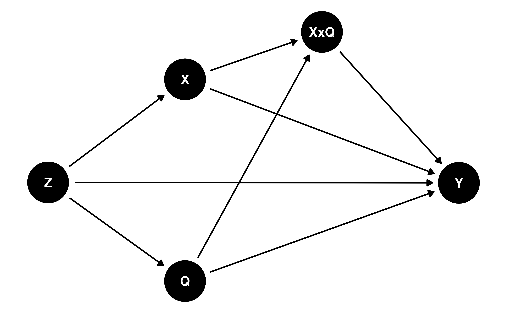

Stanford University
y(1) - y(0), taken over different covariate distributionsThis module is where both claims stop holding
Any difference between them is driven by two things
y ~ a + l says the conditional mean is b0 + b1 * a + b2 * la = 1 and a = 0 is b1, whatever the value of lThe treatment effect is assumed to be the same for every unit, regardless of covariate values
zy ~ a * z + l adds the product term: b0 + b1 * a + b2 * z + b3 * a * z + b4 * lThe conditional treatment effect becomes b1 + b3 * z, which depends on z
b3 is zero, the treatment effect is constantzThe interaction term formalizes the claim that the effect of treatment differs across levels of a covariate
z, which lets the treatment coefficient differ across groupsl is a continuous confounder: it affects both the exposure and the outcomez is a confounder too, and it also modifies the effect: the individual effect is 2 in the low stratum and 6 in the high stratumBoth potential outcomes are simulated, so the answer is exact in this sample
# A tibble: 4 × 4
a z n prop
<int> <fct> <int> <dbl>
1 0 low 3815 0.764
2 0 high 1176 0.236
3 1 low 1177 0.235
4 1 high 3832 0.765About three quarters of the treated are high, and about three quarters of the untreated are low
# A tibble: 1 × 3
ate att atc
<dbl> <dbl> <dbl>
1 4.00 5.06 2.94The ATT is larger than the ATC because the treated are mostly high, where the effect is 6
# A tibble: 5 × 5
term estimate std.error statistic p.value
<chr> <dbl> <dbl> <dbl> <dbl>
1 (Intercept) 9.99 0.0160 624. 0
2 a 2.04 0.0333 61.2 0
3 zhigh 3.03 0.0330 91.8 0
4 l 1.99 0.0101 196. 0
5 a:zhigh 3.95 0.0465 84.9 0a is the effect in the low stratum, and a:zhigh is how much larger the effect is in the high stratumThat is the conditional story, and averaging it over a population by eye is another matter
avg_comparisons() for the ATE
Estimate Std. Error z Pr(>|z|) S 2.5 % 97.5 %
4.02 0.0238 169 <0.001 Inf 3.97 4.06
Term: a
Type: response
Comparison: 1 - 0# A tibble: 3 × 4
estimand estimate conf.low conf.high
<chr> <dbl> <dbl> <dbl>
1 ATE 4.02 3.97 4.06
2 ATT 5.06 5.01 5.11
3 ATC 2.97 2.92 3.02Each estimate matches its simulated truth
Once interaction is introduced, these estimands can differ because they average the same heterogeneous response surface over different covariate distributions
z
z Estimate Std. Error z Pr(>|z|) S 2.5 % 97.5 %
low 2.04 0.0333 61.2 <0.001 Inf 1.97 2.10
high 5.99 0.0333 180.0 <0.001 Inf 5.92 6.05
Term: a
Type: response
Comparison: 1 - 0
Hypothesis Estimate Std. Error z Pr(>|z|) S 2.5 % 97.5 %
(high) - (low) 3.95 0.0465 84.9 <0.001 Inf 3.86 4.04
Type: responseThe two strata differ by about 4, with a standard error of about 0.05

Because g-computation focuses on modeling the outcome, we must specify every interaction we think exists in order to estimate treatment effect heterogeneity
# A tibble: 3 × 4
estimand estimate conf.low conf.high
<chr> <dbl> <dbl> <dbl>
1 ATE 4.01 3.95 4.08
2 ATT 4.01 3.95 4.08
3 ATC 4.01 3.95 4.08Without an exposure-covariate interaction, the three coincide: the model assumes a constant effect across covariate values
IPW captures heterogeneity implicitly through the weighting and averaging target, not by estimating subgroup-specific effects
The modifier is a confounder, so it belongs in the propensity score model
wt_atu() builds the weights for the unexposed observations, the ATU or ATCipw()# A tibble: 1 × 5
term estimate std.error conf.low conf.high
<chr> <dbl> <dbl> <dbl> <dbl>
1 diff 4.04 0.0404 3.96 4.11# A tibble: 3 × 4
estimand estimate conf.low conf.high
<chr> <dbl> <dbl> <dbl>
1 ATE 4.04 3.96 4.11
2 ATT 5.03 4.92 5.14
3 ATC 3.03 2.91 3.15The weighted estimates recover the same truths as g-computation
ipw()# A tibble: 4 × 5
group estimate std.error conf.low conf.high
<chr> <dbl> <dbl> <dbl> <dbl>
1 overall 4.03 0.0366 3.95 4.10
2 z = low 2.10 0.0639 1.98 2.23
3 z = high 5.94 0.0672 5.81 6.07
4 z = high vs z = low 3.84 0.116 3.61 4.06z, and each level contrasted against the firstFitting each stratum on its own subset would report the same effects with no covariance between them, leaving the difference untestable
.by requiresThe remedy for an empty cell is a coarser modifier rather than a refit
If the outcome model has no term reading the exposure and the modifier together, the stratum effects are forced equal up to the covariate distribution of each stratum, and the fit warns
The modification you report is then a property of the model rather than of the data
The stratum rows report differences, and for a binary outcome risk differences and log risk ratios, but never odds ratios
An odds ratio is noncollapsible, so a difference of two of them moves with the outcome distribution whether or not the effect does
stabilize = TRUE puts the marginal probability of the observed exposure in the numerator, as it did when we first built ATE weightszfitted() alone gives the probability of exposure for every unit, which is not the probability of the exposure an unexposed unit took
Condition the numerator on the modifier and on nothing the model does not hold
# A tibble: 3 × 3
weights sd max
<chr> <dbl> <dbl>
1 w_ate 1.50 15.0
2 sw_ate 0.750 7.50
3 sw_ate_z 0.221 3.53The exposure is nearly balanced, so the default numerator is close to a constant one half; conditioning on z is what reshapes the weights
# A tibble: 4 × 5
group estimate std.error conf.low conf.high
<chr> <dbl> <dbl> <dbl> <dbl>
1 overall 4.03 0.0366 3.95 4.10
2 z = low 2.10 0.0639 1.98 2.23
3 z = high 5.94 0.0672 5.81 6.07
4 z = high vs z = low 3.84 0.116 3.61 4.06A supplied stabilization score is treated as known in the variance, while the default stabilizer is estimated within the stacked system
income * health to the propensity score model because that product term was imbalancedIt makes no claim about whether the effect varies
These are often used interchangeably, but they answer different questions
E[y(1) - y(0) | z = high] against E[y(1) - y(0) | z = low]z is used to define subgroups: we ask how the effect of the exposure changes across observed strata of z, not what would happen if we intervened on itE[y(a = 1, b = 1) - y(a = 0, b = 1)] against E[y(a = 1, b = 0) - y(a = 0, b = 0)]The effect of one exposure under two settings of the other
Some variables are natural subgroup indicators but not plausible intervention targets
That is an effect modification question
That is a causal interaction question
The same algebraic model can serve either purpose, but the interpretation depends on the underlying question
l confounds both exposures, which are otherwise independent given l
a is 1 when b is 0 and 3 when b is 1[1] "a = 0, b = 0" "a = 1, b = 0" "a = 0, b = 1" "a = 1, b = 1"The crossing is one categorical exposure with a cell per combination
The categorical route takes the matrix of fitted probabilities, one column per cell
# A tibble: 9 × 5
contrast group estimate conf.low conf.high
<chr> <chr> <dbl> <dbl> <dbl>
1 a = 0, b = 0 overall 10.0 9.92 10.1
2 a = 1, b = 0 overall 11.0 10.9 11.1
3 a = 0, b = 1 overall 12.0 11.9 12.1
4 a = 1, b = 1 overall 15.0 14.9 15.2
5 a: 1 vs 0 b = 0 0.982 0.870 1.09
6 a: 1 vs 0 b = 1 3.02 2.86 3.18
7 b: 1 vs 0 a = 0 1.98 1.86 2.09
8 b: 1 vs 0 a = 1 4.01 3.85 4.17
9 a: 1 vs 0 b = 1 vs b = 0 2.04 1.84 2.24The simple effects include comparisons that reporting each cell against the reference cell cannot express at all
The interaction recovers the simulated 2, and on this scale it is the additive interaction
.by: modification of a joint intervention is a three-way questionNo odds ratio appears anywhere on this surface, for the same noncollapsibility reason
A joint intervention can also be weighted through one model per treatment, with the product of their weights, which is what you want when the two treatments call for different adjustment sets

A conventional DAG shows that X, Q, and Z all affect Y, but not whether X and Q interact
The interaction, if present, is implicit in the functional form of how they jointly affect Y

Arrows run from X and Q into XxQ, and from XxQ into Y, which can help identify adjustment sets for estimating interaction effects
Attia J, Holliday E, Oldmeadow C (2022). A proposal for capturing interaction and effect modification using DAGs. International Journal of Epidemiology. doi:10.1093/ije/dyac126
14-interaction-exercises.qmd)avg_comparisons() to get the ATE, then the ATT and the ATC with newdataipw() with .byjoint_exposure(), fit one propensity model over the cells, and read the cell means, simple effects, and interaction